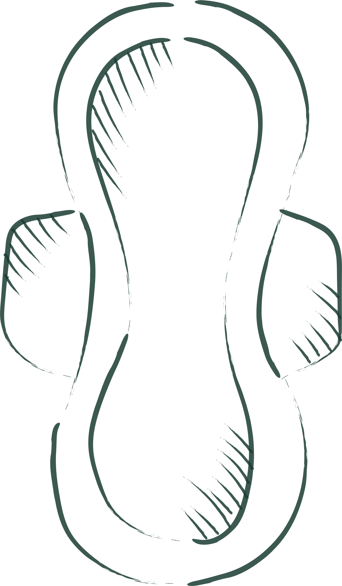

ethical tea
helping sri lankan tea plantation workers
volunteer
Feminine hygiene products are necessary for women on tea plantations. By creating reusable cloth sanitary pads, women can wash and reuse them for about 5 years. This can help reduce excess costs and will eliminate environmental waste due to purchasing plastic, non-reusable pads.
Click the link below to see how you can sew some reusable cloth sanitary pads.
Reusable Cloth Sanitary Pads
During our current COVID-19 pandemic, everyone should have access to masks in order to limit droplet transmission. By creating reusable cloth masks, workers on tea plantations can continue working and living under safer conditions while washing and reusing the masks.
Click the link below to see how you can sew some reusable cloth masks.
Reusable Cloth Masks